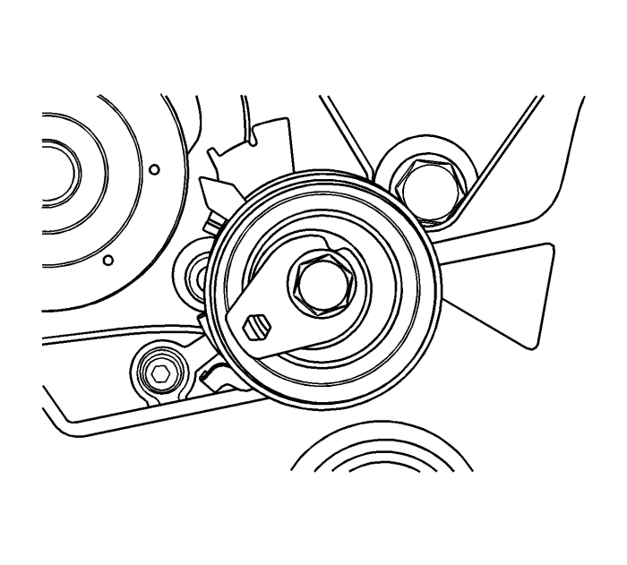
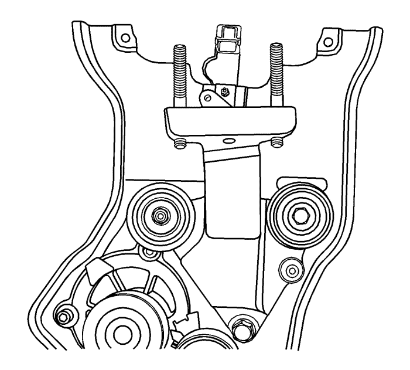
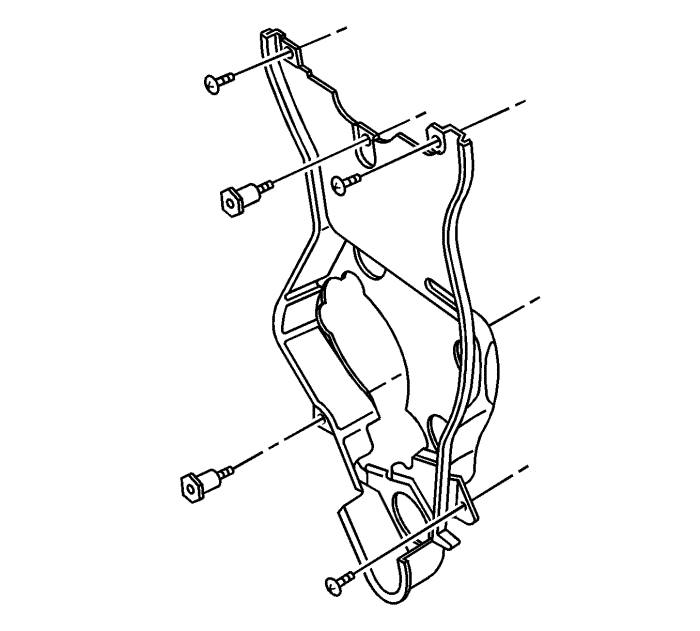
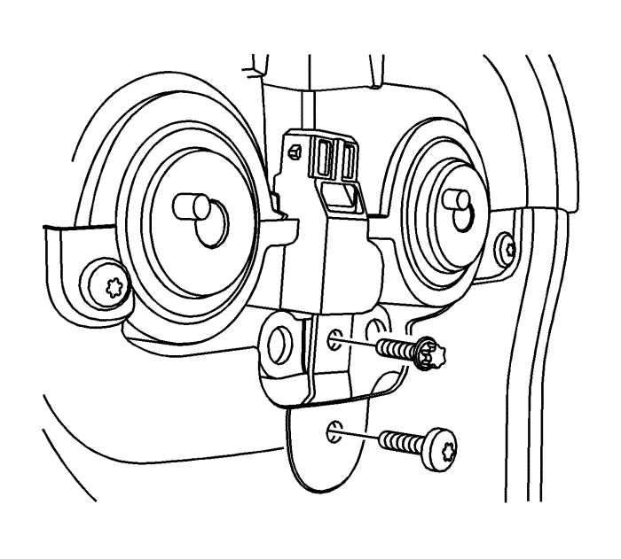
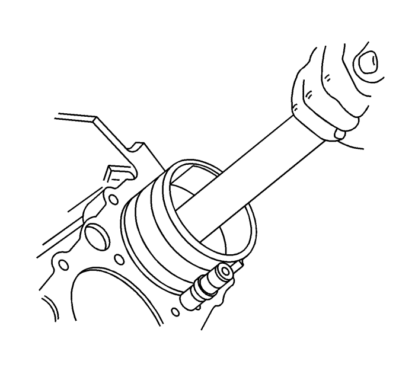
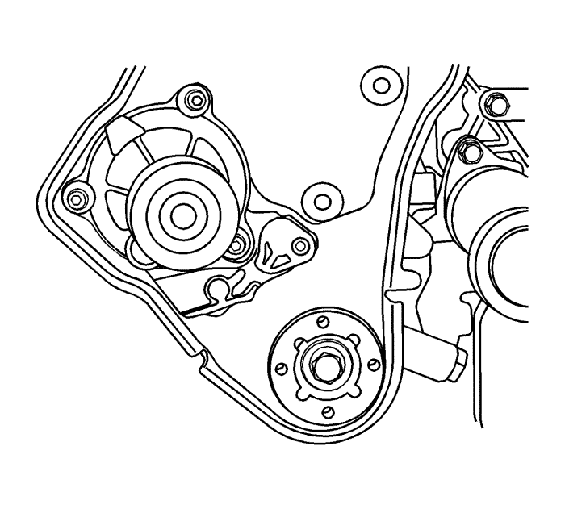
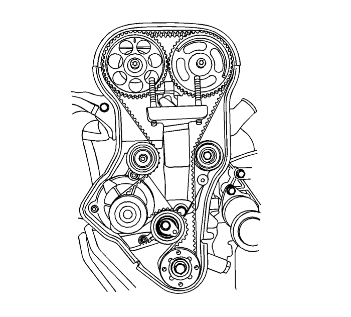

Sustitución de la tapa trasera de la correa de distribución
Herramientas especiales
EN-45059 Medidor de ángulos
Si desea informarse sobre herramientas regionales equivalentes, consultar Herramientas especiales .
Procedimiento de desmontaje
Advertencia: Consulte Advertencia sobre la desconexión de la batería en la sección Prólogo

- Desconecte el cable de batería negativo.
- Retire la correa dentada. Consultar Sustitución de la correa de distribución .
- Retire los engranajes del árbol de levas. Consultar Sustitución del engranaje del árbol de levas .
- Desmonte el tornillo del tensor automático de la correa de distribución.
- Desmonte el tensor automático de la correa de distribución.

- Desmonte la tuerca y el tornillo de fijación de las poleas locas de la correa de distribución.
- Desmonte las poleas locas de la correa de distribución.
- Desmonte los tornillos de montaje del soporte del adaptador de fijación del motor.
- Desmote el soporte del adaptador de fijación del motor.
- Retire el tornillo del sensor de posición del árbol de levas. Consultar Sustitución del sensor de posición del árbol de levas - admisión : LE5 , LE9 o LAF y Sustitución del sensor de posición del árbol de levas - escape : LE5 , LE9 o LAF .

- Desmonte el piñón del cigüeñal.
- Quite los tornillos de la tapa trasera de la correa de distribución.
- Desmonte la tapa trasera de la correa de la distribución.
Procedimiento de montaje
Precaución: Consulte Precaución con las fijaciones en la sección Prólogo
- Monte la tapa trasera de la correa de distribución y apriete los tornillos a 7 N·m (62 lib. pulg.).

- Monte el sensor de posición del árbol de levas y apriete el tornillo a 8 N·m (71 lib. pulg.).

- Monte el soporte de apoyo del adaptador de alojamiento del motor y apriete los tornillos hasta 45 N·m (33 lib. pie).
- Monte la polea tensora de la correa de distribución y apriete la tuerca y el tornillo hasta 25 N·m (18 lib. pie).

- Monte el piñón de accionamiento de la correa de distribución del cigüeñal y apriete el tornillo hasta 135 N·m (100 lib. pie) más 30 grados y más 10 grados usando el metro EN-45059.
- Monte el dispositivo tensor automático de la correa de distribución y apriete hasta 25 N·m (18 lib. pie).

- Monte los engranajes del árbol de levas. Consultar Sustitución del engranaje del árbol de levas .
- Monte la correa de distribución. Consultar Sustitución de la correa de distribución .
- Conecte el cable negativo de la batería.
| © Copyright Chevrolet Europe. All rights reserved |